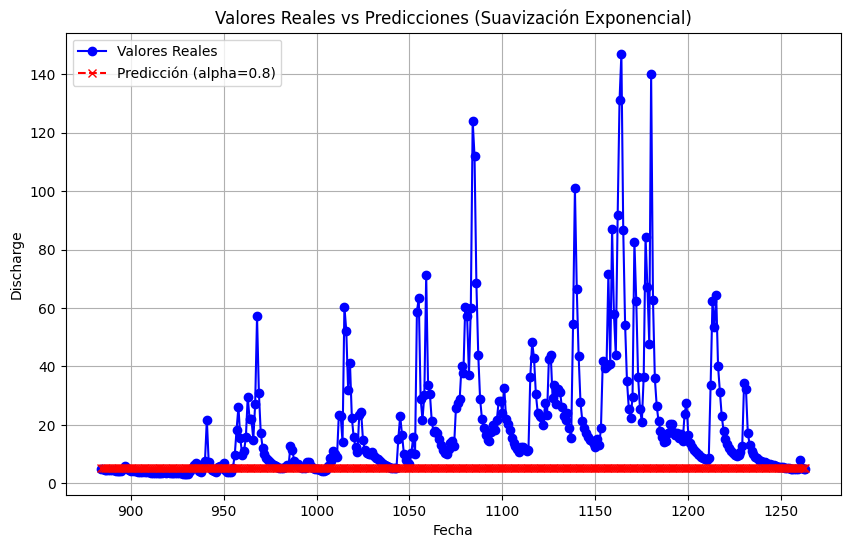
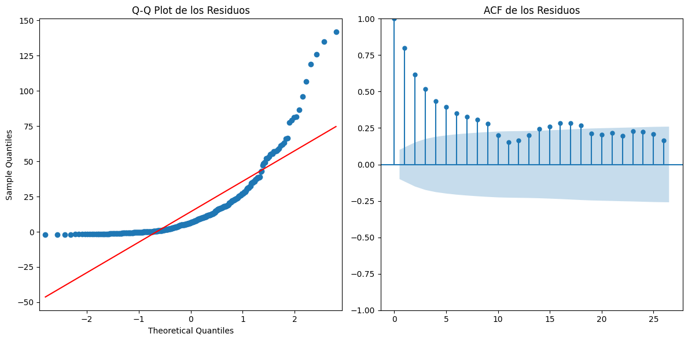
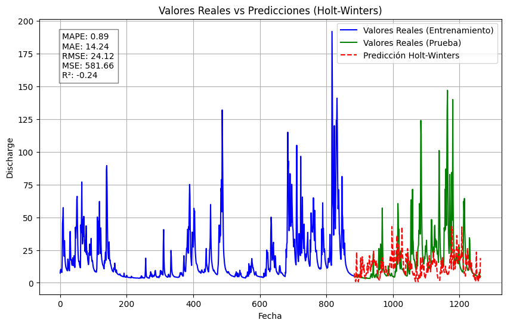
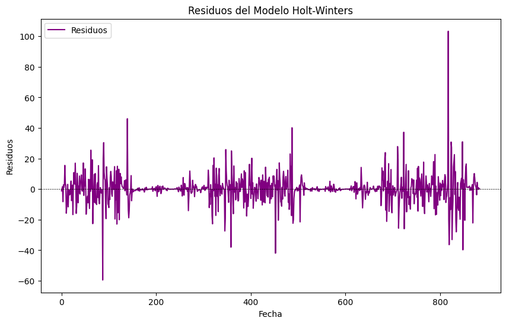
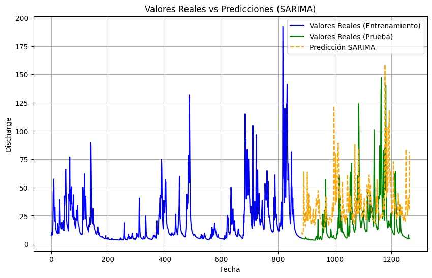

Modelos Comerciales#
pip install scikit-learn
Requirement already satisfied: scikit-learn in c:\users\fba\miniconda3\envs\st_2024_03\lib\site-packages (1.3.2)
Requirement already satisfied: numpy<2.0,>=1.17.3 in c:\users\fba\miniconda3\envs\st_2024_03\lib\site-packages (from scikit-learn) (1.24.3)
Requirement already satisfied: scipy>=1.5.0 in c:\users\fba\miniconda3\envs\st_2024_03\lib\site-packages (from scikit-learn) (1.10.1)
Requirement already satisfied: joblib>=1.1.1 in c:\users\fba\miniconda3\envs\st_2024_03\lib\site-packages (from scikit-learn) (1.4.2)
Requirement already satisfied: threadpoolctl>=2.0.0 in c:\users\fba\miniconda3\envs\st_2024_03\lib\site-packages (from scikit-learn) (3.5.0)
Note: you may need to restart the kernel to use updated packages.
import numpy as np
import pandas as pd
df = pd.read_csv('river_aire_discharge_timeseries.csv', delimiter=',')#.sort_values('Date')
df['Date'] = pd.to_datetime(df['Date'], format='%d/%m/%Y')
print(df.head())
Date SF_absolute_humidity SF_relative_humidity \
0 2017-11-14 8.3 86.2
1 2017-11-15 7.6 87.0
2 2017-11-16 6.4 78.8
3 2017-11-17 5.4 77.3
4 2017-11-18 5.6 74.0
SF_mean_air_temperature SF_atmospheric_pressure SF_potential_evaporation \
0 10.4 1013.1 0.4
1 8.8 1016.3 0.4
2 7.7 1014.7 0.6
3 5.6 1019.7 0.6
4 6.5 1013.1 0.7
SF_net_radiation SF_volumetric_water_content SF_soil_temperature \
0 0.8 32.4 6.9
1 1.1 31.3 8.1
2 -2.7 31.8 7.1
3 -2.3 32.5 4.9
4 -2.3 30.4 5.2
SF_wind_speed ... river_level_snaygill river_level_kildwick \
0 2.9 ... 0.417 0.366
1 1.6 ... 0.695 0.496
2 3.2 ... 0.715 0.497
3 2.9 ... 0.631 0.476
4 3.4 ... 0.534 0.430
river_level_kirkstall headingley_precipitation malham_precipitation \
0 1.514 1.4 9.6
1 1.545 0.0 3.8
2 1.544 0.4 1.6
3 1.562 0.0 0.8
4 1.536 0.0 0.0
skipton_snaygill_precipitation farnley_hall_precipitation \
0 0.8 0.8
1 0.8 0.0
2 2.4 0.2
3 0.4 0.0
4 0.0 0.0
embsay_precipitation silsden_precipitation lower_laithe_precipitation
0 6.6 1.2 1.0
1 2.2 1.2 1.4
2 1.6 1.0 2.0
3 0.2 0.4 0.2
4 0.0 0.0 0.2
[5 rows x 24 columns]
import pandas as pd
from sklearn.model_selection import train_test_split
Separación de training validación y test#
print(df)
Date SF_absolute_humidity SF_relative_humidity \
0 2017-11-14 8.3 86.2
1 2017-11-15 7.6 87.0
2 2017-11-16 6.4 78.8
3 2017-11-17 5.4 77.3
4 2017-11-18 5.6 74.0
... ... ... ...
1259 2021-04-26 5.1 67.2
1260 2021-04-27 6.2 76.9
1261 2021-04-28 5.2 69.8
1262 2021-04-29 5.2 76.5
1263 2021-04-30 5.5 81.4
SF_mean_air_temperature SF_atmospheric_pressure \
0 10.4 1013.1
1 8.8 1016.3
2 7.7 1014.7
3 5.6 1019.7
4 6.5 1013.1
... ... ...
1259 7.5 1014.9
1260 7.7 1003.5
1261 6.8 1004.4
1262 5.1 1006.3
1263 5.1 1009.4
SF_potential_evaporation SF_net_radiation SF_volumetric_water_content \
0 0.4 0.8 32.4
1 0.4 1.1 31.3
2 0.6 -2.7 31.8
3 0.6 -2.3 32.5
4 0.7 -2.3 30.4
... ... ... ...
1259 2.8 10.3 21.9
1260 1.5 5.4 22.7
1261 1.8 5.3 25.2
1262 1.6 6.7 22.9
1263 1.6 8.0 22.3
SF_soil_temperature SF_wind_speed ... river_level_snaygill \
0 6.9 2.9 ... 0.417
1 8.1 1.6 ... 0.695
2 7.1 3.2 ... 0.715
3 4.9 2.9 ... 0.631
4 5.2 3.4 ... 0.534
... ... ... ... ...
1259 9.3 2.3 ... 0.171
1260 9.6 2.6 ... 0.175
1261 9.1 3.1 ... 0.176
1262 8.5 2.9 ... 0.169
1263 8.2 2.2 ... 0.166
river_level_kildwick river_level_kirkstall headingley_precipitation \
0 0.366 1.514 1.4
1 0.496 1.545 0.0
2 0.497 1.544 0.4
3 0.476 1.562 0.0
4 0.430 1.536 0.0
... ... ... ...
1259 0.243 1.466 0.0
1260 0.244 1.563 13.0
1261 0.251 1.524 0.6
1262 0.249 1.471 1.0
1263 0.246 1.462 0.0
malham_precipitation skipton_snaygill_precipitation \
0 9.6 0.8
1 3.8 0.8
2 1.6 2.4
3 0.8 0.4
4 0.0 0.0
... ... ...
1259 0.0 0.0
1260 1.4 0.0
1261 0.4 0.0
1262 0.0 0.0
1263 0.0 0.2
farnley_hall_precipitation embsay_precipitation silsden_precipitation \
0 0.8 6.6 1.2
1 0.0 2.2 1.2
2 0.2 1.6 1.0
3 0.0 0.2 0.4
4 0.0 0.0 0.0
... ... ... ...
1259 0.0 0.0 0.0
1260 12.6 2.6 0.2
1261 0.2 0.2 0.0
1262 0.6 0.0 0.0
1263 0.0 0.0 1.6
lower_laithe_precipitation
0 1.0
1 1.4
2 2.0
3 0.2
4 0.2
... ...
1259 0.0
1260 7.4
1261 0.0
1262 0.0
1263 0.0
[1264 rows x 24 columns]
# segmentación de la serie
train_size = int(len(df) * 0.7) # Usar el 70% para entrenamiento
train_data = df.iloc[:train_size] # Datos de entrenamiento: desde el inicio hasta el 70%
test_data = df.iloc[train_size:] # Datos de prueba: del 70% en adelante
# Verificar las primeras filas de cada conjunto para asegurar que la división es correcta
print(train_data.head())
print(test_data.head())
Date SF_absolute_humidity SF_relative_humidity \
0 2017-11-14 8.3 86.2
1 2017-11-15 7.6 87.0
2 2017-11-16 6.4 78.8
3 2017-11-17 5.4 77.3
4 2017-11-18 5.6 74.0
SF_mean_air_temperature SF_atmospheric_pressure SF_potential_evaporation \
0 10.4 1013.1 0.4
1 8.8 1016.3 0.4
2 7.7 1014.7 0.6
3 5.6 1019.7 0.6
4 6.5 1013.1 0.7
SF_net_radiation SF_volumetric_water_content SF_soil_temperature \
0 0.8 32.4 6.9
1 1.1 31.3 8.1
2 -2.7 31.8 7.1
3 -2.3 32.5 4.9
4 -2.3 30.4 5.2
SF_wind_speed ... river_level_snaygill river_level_kildwick \
0 2.9 ... 0.417 0.366
1 1.6 ... 0.695 0.496
2 3.2 ... 0.715 0.497
3 2.9 ... 0.631 0.476
4 3.4 ... 0.534 0.430
river_level_kirkstall headingley_precipitation malham_precipitation \
0 1.514 1.4 9.6
1 1.545 0.0 3.8
2 1.544 0.4 1.6
3 1.562 0.0 0.8
4 1.536 0.0 0.0
skipton_snaygill_precipitation farnley_hall_precipitation \
0 0.8 0.8
1 0.8 0.0
2 2.4 0.2
3 0.4 0.0
4 0.0 0.0
embsay_precipitation silsden_precipitation lower_laithe_precipitation
0 6.6 1.2 1.0
1 2.2 1.2 1.4
2 1.6 1.0 2.0
3 0.2 0.4 0.2
4 0.0 0.0 0.2
[5 rows x 24 columns]
Date SF_absolute_humidity SF_relative_humidity \
884 2020-04-16 5.8 64.1
885 2020-04-17 5.9 72.7
886 2020-04-18 5.7 72.0
887 2020-04-19 5.2 67.9
888 2020-04-20 5.2 64.7
SF_mean_air_temperature SF_atmospheric_pressure \
884 10.3 1012.3
885 7.8 1014.9
886 7.4 1014.8
887 7.8 1018.0
888 8.4 1017.9
SF_potential_evaporation SF_net_radiation SF_volumetric_water_content \
884 3.3 10.2 20.6
885 2.4 9.5 20.7
886 1.7 5.0 20.0
887 3.2 11.3 19.8
888 3.3 11.0 19.0
SF_soil_temperature SF_wind_speed ... river_level_snaygill \
884 10.8 2.7 ... 0.120
885 10.6 3.4 ... 0.128
886 9.9 2.6 ... 0.140
887 10.0 3.0 ... 0.120
888 9.9 4.1 ... 0.110
river_level_kildwick river_level_kirkstall headingley_precipitation \
884 0.250 1.486 0.0
885 0.245 1.486 0.0
886 0.240 1.484 0.0
887 0.239 1.485 0.0
888 0.234 1.481 0.0
malham_precipitation skipton_snaygill_precipitation \
884 0.0 0.0
885 0.0 0.0
886 0.0 0.0
887 0.0 0.0
888 0.0 0.0
farnley_hall_precipitation embsay_precipitation silsden_precipitation \
884 0.0 0.0 0.0
885 0.0 0.0 0.0
886 0.0 0.0 0.0
887 0.0 0.0 0.0
888 0.0 0.0 0.0
lower_laithe_precipitation
884 0.0
885 0.4
886 0.0
887 0.0
888 0.0
[5 rows x 24 columns]
Se realizá una serparación de los datos, donde el 70% se usan para train, el 30% se usan para test
Pronosticos#
Suavización exponencial de primer orden SES#
from statsmodels.tsa.holtwinters import SimpleExpSmoothing
from sklearn.metrics import mean_absolute_error, mean_squared_error, r2_score
import pandas as pd
import numpy as np
# Función mejorada para probar diferentes valores de alpha y calcular métricas adicionales
def firstsmoothstats(train_data, test_data):
alphas = np.arange(0.1, 0.9, 0.1)
step = len(test_data)
best_mae = float("inf")
best_alpha = None
best_metrics = {}
for alpha in alphas:
if 'discharge_armley' in train_data.columns:
train_series = train_data['discharge_armley']
else:
raise KeyError("La columna 'discharge_armley' no se encontró en train_data.")
# Ajustar el modelo a los datos de entrenamiento
ses_model = SimpleExpSmoothing(train_series).fit(smoothing_level=alpha, optimized=False)
# Hacer predicciones para comparar con los últimos valores del entrenamiento
y_pred = ses_model.fittedvalues[-step:] # Comparar con el final de la serie de entrenamiento
# Calcular el error usando los valores reales correspondientes
if 'discharge_armley' in train_data.columns:
y_true = train_series.tail(step)
mae = mean_absolute_error(y_true, y_pred)
mse = mean_squared_error(y_true, y_pred)
rmse = np.sqrt(mse)
mape = np.mean(np.abs((y_true - y_pred) / y_true)) * 100
r2 = r2_score(y_true, y_pred)
else:
raise KeyError("La columna 'discharge_armley' no se encontró en train_data.")
# Guardar el mejor alpha basado en el MAE
if mae < best_mae:
best_alpha = alpha
best_mae = mae
best_metrics = {
'MAE': mae,
'MSE': mse,
'RMSE': rmse,
'MAPE': mape,
'R²': r2
}
return best_alpha, best_mae, best_metrics
# Llamar a la función para obtener el mejor resultado
best_alpha, best_mae, best_metrics = firstsmoothstats(train_data, test_data)
print(f"Mejor alpha: {best_alpha}, MAE: {best_mae}")
print("Métricas adicionales:", best_metrics)
Mejor alpha: 0.8, MAE: 7.076236021209091
Métricas adicionales: {'MAE': 7.076236021209091, 'MSE': 240.99301550733267, 'RMSE': 15.52394973926844, 'MAPE': 21.52803302437119, 'R²': 0.633468887373445}
import matplotlib.pyplot as plt
def plot_real_vs_pred_optimized(train_data, test_data, best_alpha):
# Crear el modelo con el mejor alpha encontrado
ses_model = SimpleExpSmoothing(train_data).fit(smoothing_level=best_alpha, optimized=False)
# Realizar predicciones
y_pred = ses_model.forecast(len(test_data))
# Graficar los valores reales y las predicciones
plt.figure(figsize=(10, 6))
plt.plot(test_data.index, test_data, label='Valores Reales', color='blue', marker='o', linestyle='-')
plt.plot(test_data.index, y_pred, label=f'Predicción (alpha={best_alpha})', color='red', linestyle='--', marker='x')
plt.xlabel('Fecha')
plt.ylabel('Discharge')
plt.title('Valores Reales vs Predicciones (Suavización Exponencial)')
plt.legend()
plt.grid(True)
plt.show()
# Usar la función para graficar con el alpha que has encontrado
plot_real_vs_pred_optimized(train_data['discharge_armley'], test_data['discharge_armley'], best_alpha)

Se puede observar que la gráfica de las predicciones no se asemeja. Esto es porque la serie tiene componentes de tendencia, estacionalidad e irregularidades. Por lo tanto usar SES NO es la mejor opción ya que este modelo no tiene encuenta la tendencia ni la estacionalidad
from statsmodels.tsa.holtwinters import SimpleExpSmoothing
from statsmodels.graphics.gofplots import qqplot
from statsmodels.graphics.tsaplots import plot_acf
import matplotlib.pyplot as plt
import numpy as np
# Alpha ya definido
alpha = 0.5 # Usa el mejor valor de alpha obtenido previamente
train_series = train_data['discharge_armley']
test_series_length = len(test_data) # Longitud del conjunto de prueba
# Ajustar el modelo de SES en los datos de entrenamiento
ses_model = SimpleExpSmoothing(train_series).fit(smoothing_level=alpha, optimized=False)
# Realizar las predicciones solo para el conjunto de prueba
y_pred = ses_model.forecast(steps=test_series_length)
# Cálculo de los residuos usando los valores de prueba reales y predichos
best_residuals = test_data['discharge_armley'] - y_pred
# Graficar el Q-Q Plot y ACF de los residuos
plt.figure(figsize=(12, 6))
plt.subplot(1, 2, 1)
qqplot(best_residuals, line='s', ax=plt.gca())
plt.title('Q-Q Plot de los Residuos')
plt.subplot(1, 2, 2)
plot_acf(best_residuals, ax=plt.gca())
plt.title('ACF de los Residuos')
plt.tight_layout()
plt.show()

En gráfico de Q-Q plot, la idea es que los puntos deberian alinearse a la diagonal roja si los residuos siguen una distribución normal. Es decir, los residuos no son completamente normales.
la ACF muestra que la correlación de los residuos en diferentes lags, además se observa que algunos lags tienen autocorrelación en los residuos
Holt winters#
from statsmodels.tsa.holtwinters import ExponentialSmoothing
from sklearn.metrics import mean_absolute_percentage_error, mean_absolute_error, mean_squared_error, r2_score
import matplotlib.pyplot as plt
import numpy as np
# Configuración del modelo Holt-Winters con tendencia y estacionalidad (si aplica)
train_series = train_data['discharge_armley']
test_series_length = len(test_data)
# Ajustar el modelo Holt-Winters sobre los datos de entrenamiento
holt_winters_model = ExponentialSmoothing(
train_series,
trend=None, # 'add' o 'mul' para tendencia
seasonal='add', # 'add' o 'mul' si hay estacionalidad
seasonal_periods=180 # Ajustar según la periodicidad de tu serie
).fit()
# Predecir los valores de prueba
y_pred = holt_winters_model.forecast(steps=test_series_length)
# Calcular métricas de error
mape = mean_absolute_percentage_error(test_data['discharge_armley'], y_pred)
mae = mean_absolute_error(test_data['discharge_armley'], y_pred)
rmse = np.sqrt(mean_squared_error(test_data['discharge_armley'], y_pred))
mse = mean_squared_error(test_data['discharge_armley'], y_pred)
r2 = r2_score(test_data['discharge_armley'], y_pred)
# Graficar los resultados
plt.figure(figsize=(10, 6))
plt.plot(train_series.index, train_series, label="Valores Reales (Entrenamiento)", color='blue')
plt.plot(test_data.index, test_data['discharge_armley'], label="Valores Reales (Prueba)", color='green')
plt.plot(test_data.index, y_pred, label="Predicción Holt-Winters", linestyle='--', color='red')
# Mostrar las métricas en el gráfico
error_text = f"MAPE: {mape:.2f}\nMAE: {mae:.2f}\nRMSE: {rmse:.2f}\nMSE: {mse:.2f}\nR²: {r2:.2f}"
plt.text(0.05, 0.95, error_text, transform=plt.gca().transAxes, fontsize=10,
verticalalignment='top', bbox=dict(facecolor='white', alpha=0.5))
plt.legend()
plt.xlabel("Fecha")
plt.ylabel("Discharge")
plt.title("Valores Reales vs Predicciones (Holt-Winters)")
plt.grid(True)
plt.show()

La predicción del modelo Holt Winters sigue un comportamiento descendiente de los datos reales hasta el final de la serie. El modelo captura razonablemente la tendencia baja, pero no muestra la misma magnitud de variabilidad
holt_winters_model = ExponentialSmoothing(
train_series,
trend='add',
seasonal='add',
seasonal_periods=365
).fit()
fitted_values = holt_winters_model.fittedvalues
residuals = train_series - fitted_values
plt.figure(figsize=(10, 6))
plt.plot(residuals, color='purple', label='Residuos')
plt.axhline(0, linestyle='--', color='black', linewidth=0.5)
plt.xlabel("Fecha")
plt.ylabel("Residuos")
plt.title("Residuos del Modelo Holt-Winters")
plt.legend()
plt.show()
print(residuals.describe())

count 884.000000
mean -0.031749
std 9.475199
min -59.487557
25% -2.555509
50% 0.011058
75% 2.762901
max 103.321047
dtype: float64
Los residuos suelen oscilar en la línea cero, es decir que el modelo no presenta un sesgo evidente. La variabilidad de los residuos no parece ser consante a lo largo del tiempo.
SARIMA#
from statsmodels.tsa.statespace.sarimax import SARIMAX
import matplotlib.pyplot as plt
from sklearn.metrics import mean_squared_error
import warnings
warnings.filterwarnings("ignore")
# Configuración de los datos
train_series = train_data['discharge_armley']
test_series = test_data['discharge_armley']
# Rangos de parámetros para la búsqueda en rejilla
p = d = q = range(0, 2) # Rangos para (p, d, q)
P = D = Q = range(0, 2) # Rangos para (P, D, Q)
seasonal_periods = [180] # Períodos estacionales
# Combinaciones posibles para (p, d, q) y (P, D, Q, s)
pdq = [(x, y, z) for x in p for y in d for z in q]
seasonal_pdq = [(x, y, z, s) for x in P for y in D for z in Q for s in seasonal_periods]
# Variables para almacenar los mejores parámetros y error
best_pdq = None
best_seasonal_pdq = None
lowest_aic = float("inf")
# Búsqueda en rejilla de los mejores parámetros
for param in pdq:
for seasonal_param in seasonal_pdq:
try:
# Ajuste del modelo SARIMA
sarima_model = SARIMAX(train_series,
order=param,
seasonal_order=seasonal_param,
enforce_stationarity=False,
enforce_invertibility=False).fit()
# Comparar el criterio AIC para seleccionar el mejor modelo
if sarima_model.aic < lowest_aic:
lowest_aic = sarima_model.aic
best_pdq = param
best_seasonal_pdq = seasonal_param
except Exception as e:
continue
print(f"Mejor combinación de parámetros: SARIMA{best_pdq}x{best_seasonal_pdq} - AIC: {lowest_aic}")
# Entrenar modelo SARIMA con los mejores parámetros
best_sarima_model = SARIMAX(train_series,
order=best_pdq,
seasonal_order=best_seasonal_pdq).fit()
# Predicción sobre el conjunto de prueba
sarima_pred = best_sarima_model.predict(start=len(train_series),
end=len(train_series) + len(test_series) - 1)
# Graficar los resultados
plt.figure(figsize=(10, 6))
plt.plot(train_series.index, train_series, label="Valores Reales (Entrenamiento)", color='blue')
plt.plot(test_data.index, test_series, label="Valores Reales (Prueba)", color='green')
plt.plot(test_data.index, sarima_pred, label="Predicción SARIMA", linestyle='--', color='orange')
plt.legend()
plt.xlabel("Fecha")
plt.ylabel("Discharge")
plt.title("Valores Reales vs Predicciones (SARIMA)")
plt.grid(True)
plt.show()
# Resumen del modelo SARIMA
print(best_sarima_model.summary())
Mejor combinación de parámetros: SARIMA(1, 1, 1)x(1, 1, 0, 180) - AIC: 4315.709498968872

SARIMAX Results
============================================================================================
Dep. Variable: discharge_armley No. Observations: 884
Model: SARIMAX(1, 1, 1)x(1, 1, [], 180) Log Likelihood -2869.533
Date: Sun, 27 Oct 2024 AIC 5747.067
Time: 00:42:11 BIC 5765.288
Sample: 0 HQIC 5754.109
- 884
Covariance Type: opg
==============================================================================
coef std err z P>|z| [0.025 0.975]
------------------------------------------------------------------------------
ar.L1 0.8210 0.023 36.428 0.000 0.777 0.865
ma.L1 -0.9838 0.010 -101.294 0.000 -1.003 -0.965
ar.S.L180 -0.4365 0.030 -14.552 0.000 -0.495 -0.378
sigma2 194.3864 2.356 82.515 0.000 189.769 199.004
===================================================================================
Ljung-Box (L1) (Q): 2.18 Jarque-Bera (JB): 42181.21
Prob(Q): 0.14 Prob(JB): 0.00
Heteroskedasticity (H): 3.97 Skew: 3.43
Prob(H) (two-sided): 0.00 Kurtosis: 40.32
===================================================================================
Warnings:
[1] Covariance matrix calculated using the outer product of gradients (complex-step).
Validaciones#
from statsmodels.tsa.stattools import adfuller
def stationarity(ts, max_diff=3):
d = 0
adf_result = adfuller(ts, autolag='AIC')
while adf_result[1] > 0.05 and d < max_diff:
d += 1
ts = ts.diff().dropna() # Aplicar diferenciación
adf_result = adfuller(ts, autolag='AIC')
print(f"Diferenciación aplicada: d={d}, p-value={adf_result[1]}")
if adf_result[1] > 0.05:
print("Los datos no serán estacionarios incluso después de aplicar diferenciaciones.")
else:
print("Los datos son estacionarios.")
return d, ts
d, diff_train_data = stationarity(train_data)
d, diff_test_data = stationarity(test_data)
d, diff_val_data = stationarity(val_data)
print(f"Número de diferenciaciones aplicadas: {d}")
---------------------------------------------------------------------------
TypeError Traceback (most recent call last)
~\AppData\Local\Temp\ipykernel_14960\2261782049.py in ?()
---> 19 from statsmodels.tsa.stattools import adfuller
20
21 def stationarity(ts, max_diff=3):
22 d = 0
~\AppData\Local\Temp\ipykernel_14960\2261782049.py in ?(ts, max_diff)
3 def stationarity(ts, max_diff=3):
4 d = 0
----> 5 adf_result = adfuller(ts, autolag='AIC')
6
7 while adf_result[1] > 0.05 and d < max_diff:
8 d += 1
c:\Users\FBA\miniconda3\envs\st_2024_03\lib\site-packages\statsmodels\tsa\stattools.py in ?(x, maxlag, regression, autolag, store, regresults)
259 .. [4] MacKinnon, J.G. 2010. "Critical Values for Cointegration Tests." Queen"s
260 University, Dept of Economics, Working Papers. Available at
261 http://ideas.repec.org/p/qed/wpaper/1227.html
262 """
--> 263 x = array_like(x, "x")
264 maxlag = int_like(maxlag, "maxlag", optional=True)
265 regression = string_like(
266 regression, "regression", options=("c", "ct", "ctt", "n")
c:\Users\FBA\miniconda3\envs\st_2024_03\lib\site-packages\statsmodels\tools\validation\validation.py in ?(obj, name, dtype, ndim, maxdim, shape, order, contiguous, optional, writeable)
139 if order == "C" or contiguous:
140 reqs += ["C"]
141 elif order == "F":
142 reqs += ["F"]
--> 143 arr = np.require(obj, dtype=dtype, requirements=reqs)
144 if maxdim is not None:
145 if arr.ndim > maxdim:
146 msg = "{0} must have ndim <= {1}".format(name, maxdim)
c:\Users\FBA\miniconda3\envs\st_2024_03\lib\site-packages\numpy\core\_asarray.py in ?(a, dtype, requirements, like)
126 elif 'C' in requirements:
127 order = 'C'
128 requirements.remove('C')
129
--> 130 arr = array(a, dtype=dtype, order=order, copy=False, subok=subok)
131
132 for prop in requirements:
133 if not arr.flags[prop]:
c:\Users\FBA\miniconda3\envs\st_2024_03\lib\site-packages\pandas\core\generic.py in ?(self, dtype)
1996 def __array__(self, dtype: npt.DTypeLike | None = None) -> np.ndarray:
1997 values = self._values
-> 1998 arr = np.asarray(values, dtype=dtype)
1999 if (
2000 astype_is_view(values.dtype, arr.dtype)
2001 and using_copy_on_write()
TypeError: float() argument must be a string or a number, not 'Timestamp'
Los datos de caudal, no son estacionarios
#calculo de los errores
def errors(y_pred, y_real):
mae = mean_absolute_error(y_real, y_pred)
mape = 100*(sum(abs(((y_real - y_pred)/y_real)))/len(y_real))
mse = mean_squared_error(y_real , y_pred)
rmse = np.sqrt(mse)
r2 = r2_score(y_real, y_pred)
return mae, mape, mse, rmse, r2
#evaluacion de supuestos
def assumptions(residuals):
warning = ""
a = 0
l = 10
if len(residuals) < 10:
l = 4
#Independency
#H0: The residuals are independent.
#H1: The residuals aren't independent.
ljung_box_test = acorr_ljungbox(residuals, lags=l, return_df=True)
ljung_box_pvalue = ljung_box_test['lb_pvalue'].values[0]
if ljung_box_pvalue < 0.05:
warning= warning + " The residuals aren't independent"
a=a+1
#Normality test
#H0: The residuals have a normal distribution.
#H1: The residuals don't have a normal distribution.
jb_stat, jb_pvalue, skewness, kurtosis = jarque_bera(residuals)
if jb_pvalue < 0.05:
a = a+1
warning = warning + " The residuals do not follow a normal distribution"
return jb_pvalue, ljung_box_pvalue
#graficos supuestos
def plot_residuals(residuals):
plt.figure(figsize=(12, 12))
#Serie de residuos
plt.subplot(3, 1, 1)
plt.plot(residuals, label='Residuos', color='blue')
plt.axhline(0, color='red', linestyle='--')
plt.title('Serie de Residuos')
plt.xlabel('Índice')
plt.ylabel('Residuo')
plt.legend()
#QQ Plot
plt.subplot(3, 1, 2)
sm.qqplot(residuals, line='s', ax=plt.gca())
plt.title('QQ Plot de Residuos')
#ACF de residuos
plt.subplot(3, 1, 3)
plot_acf(residuals, ax=plt.gca())
plt.title('ACF de Residuos')
plt.subplots_adjust(hspace=0.4)
plt.tight_layout()
plt.show()